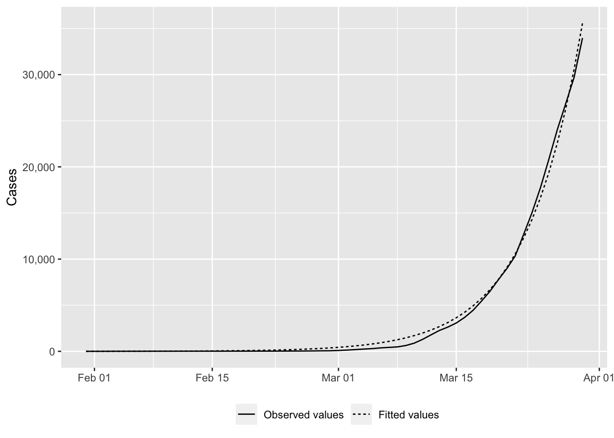
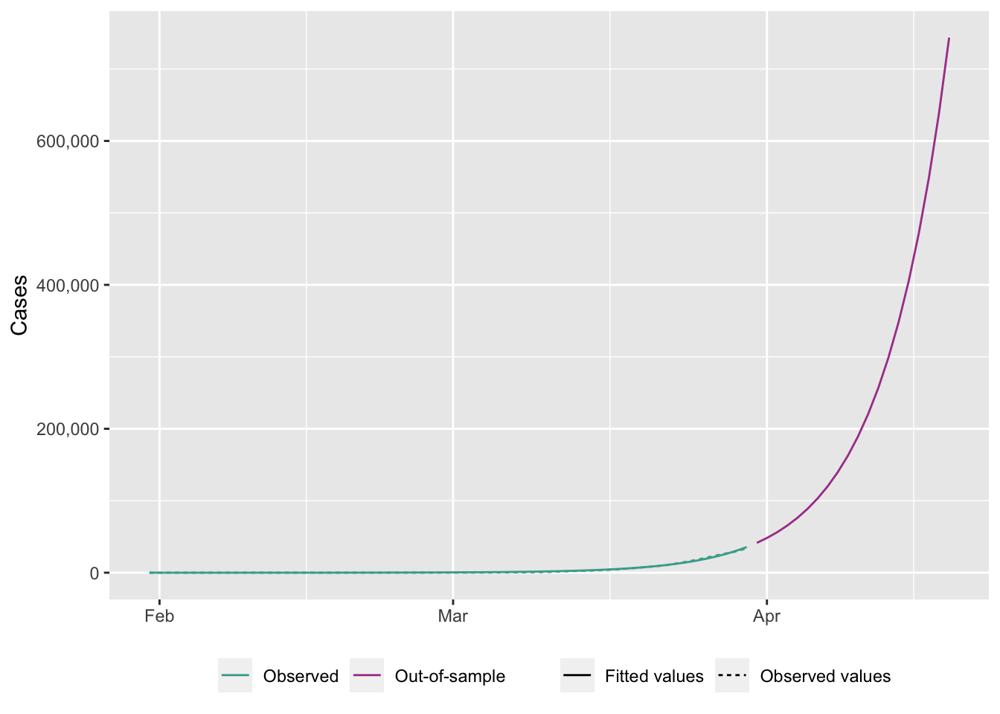
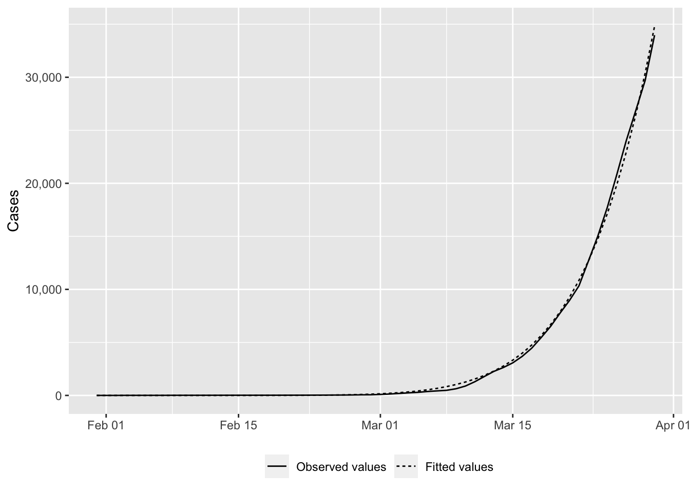
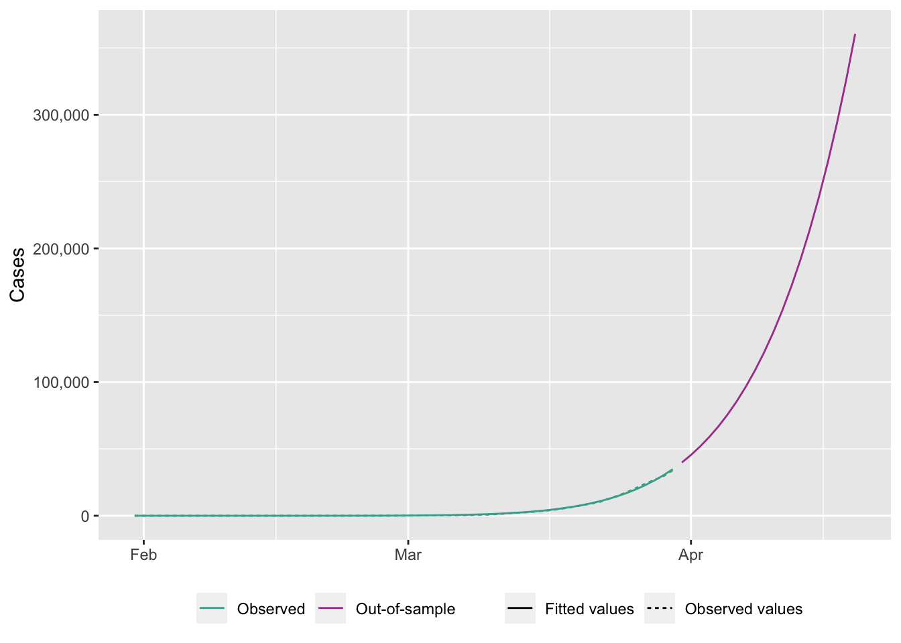

# FOR UNIX USERS
Sys.setlocale("LC_ALL", "en_US.UTF-8")[1] "en_US.UTF-8/en_US.UTF-8/en_US.UTF-8/C/en_US.UTF-8/en_US.UTF-8"# FOR WINDOWS USERS
# Sys.setlocale("LC_ALL", "English_United States")In this chapter, we provide some codes to estimate the reproduction number \(\mathcal{R}_0\).
# FOR UNIX USERS
Sys.setlocale("LC_ALL", "en_US.UTF-8")[1] "en_US.UTF-8/en_US.UTF-8/en_US.UTF-8/C/en_US.UTF-8/en_US.UTF-8"# FOR WINDOWS USERS
# Sys.setlocale("LC_ALL", "English_United States")Some packages that will be used:
library(tidyverse)── Attaching core tidyverse packages ──────────────────────── tidyverse 2.0.0 ──
✔ dplyr 1.1.2 ✔ readr 2.1.4
✔ forcats 1.0.0 ✔ stringr 1.5.0
✔ ggplot2 3.4.2 ✔ tibble 3.2.1
✔ lubridate 1.9.2 ✔ tidyr 1.3.0
✔ purrr 1.0.1
── Conflicts ────────────────────────────────────────── tidyverse_conflicts() ──
✖ dplyr::filter() masks stats::filter()
✖ dplyr::lag() masks stats::lag()
ℹ Use the conflicted package (<http://conflicted.r-lib.org/>) to force all conflicts to become errorslibrary(scales)
Attaching package: 'scales'
The following object is masked from 'package:purrr':
discard
The following object is masked from 'package:readr':
col_factorlibrary(minpack.lm)
library(mvtnorm)Let us load the data (results obtained from Chapter 4).
load("data/data_after_load.rda")In this section, we present the codes to estimate the reproduction number of the first and second waves using either an exponential model or a generalized exponential model. Based on those models, we estimate the reproduction number \(\mathcal{R}_0\) for both waves.
We consider the following start and end dates for each sample, for each country:
| Wave | Start | End |
|---|---|---|
| First | Date at which the number of cases exceeds 0 | Seven days after the stringency index reaches its max value (during the first 100 days of the epidemics) |
| Second | Sixty days after the stringency index begins to decrease from its maximum value | September 30, 2020 |
For Sweden, the severity index does not reach 70. Here, we use the dates from Ireland for the definition of those for Sweden.
For the estimation of the reproduction number \(\mathcal{R}_0\), we rely on the estimations made by Li et al. (2020). We propose to set the window size \(h\) so that it represents 0.99 of the probability in the Gamma distribution of the serial interval.
# Individual data
# From Li et al. (2020):
mean_si <- 7.5
std_si <- 3.4
shape <- (mean_si / std_si)^2
scale <- mean_si / shape
h <- ceiling(qgamma(p = .99, shape = shape, scale = scale))
h[1] 18Let us create a function that, when provided with the name of the country, returns a table for that country that contains the following columns:
start_first_wave: start of the first wave, defined as the first date when the cumulative number of cases is greater than 1start_high_stringency: date at which the stringency index reaches 70 for the first time within the first 100 days of the sample (for Sweden, as the index never reached 70, we use the time at which the stringency is at its maximum value for the first time within the same time interval)start_reduce_restrict: moment at which the restrictions of the first wave starts to lowerstart_date_sample_second_wave: 60 days after the relaxation of restrictions (60 days after after start_reduce_restrict)length_high_stringency: number of days between start_high_stringency and #' Gives the dates of the different periods (first wave, start of containment, ...)
#' @param country_name name of the country
#' @param type if `"deaths"` returns the number of deaths, otherwise the number of cases
get_dates <- function(country_name) {
df_country <- confirmed_df |>
filter(country == !!country_name)
# Start of the first wave
start_first_wave <-
df_country |>
arrange(date) |>
filter(value > 0) |>
slice(1) |>
magrittr::extract2("date")
# Start of period with severity greater or equal than 70 index among the first 100 days
start_high_stringency <-
df_country |>
slice(1:100) |>
filter(stringency_index >= 70) |>
slice(1) |>
magrittr::extract2("date")
# Max for Sweden
if(country_name == "Sweden"){
start_high_stringency <-
df_country |>
slice(1:100) |>
arrange(desc(stringency_index), date) |>
slice(1) |>
magrittr::extract2("date")
}
# Max stringency first 100 days
start_max_stringency <-
df_country |>
slice(1:100) |>
arrange(desc(stringency_index), date) |>
slice(1) |>
magrittr::extract2("date")
# Moment at which the restrictions of the first wave starts to lower
start_reduce_restrict <-
df_country |>
arrange(date) |>
filter(date >= start_max_stringency) |>
mutate(tmp = dplyr::lag(stringency_index)) |>
mutate(same_strin = stringency_index == tmp) |>
mutate(same_strin = ifelse(row_number()==1, TRUE, same_strin)) |>
filter(same_strin == FALSE) |>
slice(1) |>
magrittr::extract2("date")
start_date_sample_second_wave <- start_reduce_restrict + lubridate::ddays(60)
# Length of high stringency period
length_high_stringency <- lubridate::interval(
start_high_stringency, start_reduce_restrict) / lubridate::ddays(1)
tibble(
country = country_name,
start_first_wave = start_first_wave,
start_high_stringency = start_high_stringency,
start_reduce_restrict = start_reduce_restrict,
start_date_sample_second_wave = start_date_sample_second_wave,
length_high_stringency = length_high_stringency
)
}# End of get_dates()If we apply this function for each of the 10 countries of interest:
map_df(names_countries, get_dates) |>
kableExtra::kable()| country | start_first_wave | start_high_stringency | start_reduce_restrict | start_date_sample_second_wave | length_high_stringency |
|---|---|---|---|---|---|
| United Kingdom | 2020-01-31 | 2020-03-23 | 2020-05-11 | 2020-07-10 | 49 |
| Spain | 2020-02-01 | 2020-03-17 | 2020-05-04 | 2020-07-03 | 48 |
| Italy | 2020-01-31 | 2020-03-04 | 2020-04-10 | 2020-06-09 | 37 |
| Germany | 2020-01-27 | 2020-03-22 | 2020-05-03 | 2020-07-02 | 42 |
| France | 2020-01-24 | 2020-03-17 | 2020-05-11 | 2020-07-10 | 55 |
| Sweden | 2020-02-01 | 2020-04-01 | 2020-06-13 | 2020-08-12 | 73 |
| Belgium | 2020-02-04 | 2020-03-18 | 2020-05-05 | 2020-07-04 | 48 |
| Netherlands | 2020-02-27 | 2020-03-23 | 2020-05-11 | 2020-07-10 | 49 |
| Ireland | 2020-02-29 | 2020-03-27 | 2020-05-18 | 2020-07-17 | 52 |
| Denmark | 2020-02-27 | 2020-03-18 | 2020-04-15 | 2020-06-14 | 28 |
Based on those dates, we can create a function that will prepare the dataset that will be used to estimate the exponential model, for each country, for the first wave (wave="first") or for the second (wave="second"). This functions returns a list of two elements:
get_dates(). We add two columns to that table : the start and end date of the sample.#' Extracts the cases data for a country
#' @param country_name name of the country
#' @param sample
get_cases_country <- function(country_name,
sample = c("first", "second")) {
df_country <-
confirmed_df |>
filter(country == !!country_name)
dates_country <- get_dates(country_name)
# Maximum of the severity index
max_severity <- max(df_country$stringency_index, na.rm=TRUE)
dates_country$max_severity <- max_severity
if (sample == "first") {
df_country <-
df_country |>
# `out_of_sample_horizon` more days for out-of-sample pred
filter(
date >= dates_country$start_first_wave,
date <= (dates_country$start_high_stringency +
lubridate::ddays(7) +
lubridate::ddays(out_of_sample_horizon))
)
} else {
df_country <-
df_country |>
filter(date >= dates_country$start_date_sample_second_wave)
# Let us remove the number of cases of the first date of this sample
# to all observation (translation to 1)
start_val_cases <- df_country$value[1]
df_country <-
df_country |>
mutate(value = value - start_val_cases + 1)
}
# Moving Average for missing values (i.e., for Ireland)
if (any(is.na(df_country$value))) {
replacement_values <- round(
zoo::rollapply(
df_country$value,
width=3,
FUN=function(x) mean(x, na.rm=TRUE),
by=1, by.column=TRUE, partial=TRUE, fill=NA, align="center"
)
)
# Replace only missing values
df_country <-
df_country |>
mutate(replacement_values = !!replacement_values) |>
mutate(
value = ifelse(
is.na(value),
yes = replacement_values,
no = value
)
) |>
select(-replacement_values)
}
df_country <-
df_country |>
mutate(t = row_number() - 1) |>
mutate(y = value)
dates_country <-
dates_country |>
mutate(
start_sample = first(df_country$date),
end_sample_in = last(df_country$date) -
lubridate::ddays(out_of_sample_horizon),
end_sample_out = last(df_country$date)
)
list(df_country = df_country, dates_country = dates_country)
}For example, for the UK:
out_of_sample_horizon <- 0 # This variable is explained later
cases_uk <- get_cases_country(
country_name = "United Kingdom", sample = "first"
)
cases_uk$df_country# A tibble: 60 × 8
country country_code date value stringency_index days_since_2020_01_22
<chr> <chr> <date> <int> <dbl> <dbl>
1 United … GBR 2020-01-31 2 8.33 9
2 United … GBR 2020-02-01 2 8.33 10
3 United … GBR 2020-02-02 2 11.1 11
4 United … GBR 2020-02-03 8 11.1 12
5 United … GBR 2020-02-04 8 11.1 13
6 United … GBR 2020-02-05 9 11.1 14
7 United … GBR 2020-02-06 9 11.1 15
8 United … GBR 2020-02-07 9 11.1 16
9 United … GBR 2020-02-08 13 11.1 17
10 United … GBR 2020-02-09 14 11.1 18
# ℹ 50 more rows
# ℹ 2 more variables: t <dbl>, y <int>cases_uk$dates_country# A tibble: 1 × 10
country start_first_wave start_high_stringency start_reduce_restrict
<chr> <date> <date> <date>
1 United Kingdom 2020-01-31 2020-03-23 2020-05-11
# ℹ 6 more variables: start_date_sample_second_wave <date>,
# length_high_stringency <dbl>, max_severity <dbl>, start_sample <date>,
# end_sample_in <date>, end_sample_out <date>We need to write the prediction function for the exponential model and for the generalized exponential model. To compute the reproduction number \(\mathcal{R}_0\), we also need to write down the first derivative of these functions, with respect to the time component (x in the functions).
For the exponential model:
#' Exponential model function
#' @param theta vector of named parameters
#' @param x observation / training example
exponential_f <- function(theta, x) {
c0 <- theta[["c0"]]
r <- theta[["r"]]
c0 * exp(r * x)
}#' Derivative of exponential for R0
#' @param theta vector of coefficients
#' @param x time values
derivative_exponential <- function(theta, x) {
c0 <- theta[["c0"]]
r <- theta[["r"]]
c0 * r * exp(r * x)
}For the generalized exponential model:
#' General Exponential model function
#' @param theta vector of named parameters
#' @param x observation / training example
gen_exponential_f <- function(theta, x) {
A <- theta[["A"]]
r <- theta[["r"]]
alpha <- theta[["alpha"]]
((1 - alpha) * r * x + A)^( 1 / (1 - alpha))
}#' Derivative of generalized exponential for R0
derivative_gen_exponential <- function(theta, x) {
A <- theta[["A"]]
r <- theta[["r"]]
alpha <- theta[["alpha"]]
# r * ( ( 1 - alpha ) * r * x + A )^( alpha / ( 1 - alpha ) )
numb <- A-alpha*r*x + r*x
expon <- alpha / ( 1 - alpha )
r * sign(numb) * abs(numb)^expon
}The effective reproduction number \(R_t\) is obtained, with the exponential model as follows (Cori et al. 2013):
\[ R_t = \frac{I_t}{\sum_{s=1}^t I_{t-s} \omega(s)}, \] An estimation of the reproduction number \(\mathcal{R}_0\), can be obtained by truncating this summation: \[ R_t = \frac{I_t}{\sum_{s=1}^h I_{t-s} \omega(s)} \]
#' R0 for exponential
#'
#' @param ti
#' @param h size of the window
#' @param theta estimated coefficients
#' @param shape @param scale shape and scale parameters of the Gamma distribution
R0_expo <- function(ti,
h,
theta,
shape,
scale) {
s_R <- 0
for (s in 1:h) {
s_R <- s_R +
derivative_exponential(theta, ti-s) *
dgamma(s, shape = shape, scale = scale)
}
R0 <- derivative_exponential(theta, ti) / s_R
R0
}For the generalized exponential model:
\[ R_t = \frac{((1-\alpha)\,r\,t+A)^{\alpha/(1-\alpha)}}{\sum_{s=1}^h ((1-\alpha)\,r\,(t-s)+A)^{\alpha/(1-\alpha)} \omega(s)}. \]
#' R0 for generalized exponential
#'
#' @param ti
#' @param h size of the window
#' @param theta estimated coefficients
#' @param shape @param scale shape and scale parameters of the Gamma distribution
R0_gen_expo <- function(ti,
h,
theta,
shape,
scale) {
s_R <- 0
for (s in 1:h) {
s_R <- s_R +
derivative_gen_exponential(theta, ti-s) *
dgamma(s, shape = shape, scale = scale)
}
R0 <- derivative_gen_exponential(theta, ti) / s_R
R0
}Let us define a loss function. We will use that function to try to find the parameters of the model (either the exponential model or the generalized exponential model) which minimize it. Note that we use the nls.lm() function from {minpack.lm}; hence we only need to compute the residuals and not the residual sum of square.
#' Loss function
#'
#' @param theta vector of named parameters of the model
#' @param fun prediction function of the model
#' @param y target variable
#' @param t time component (feature)
loss_function <- function(theta,
fun,
y,
t) {
(y - fun(theta = theta, x = t))
}Once the model are estimated, we can compute some goodness of fit criteria. Let us create a function that computes the AIC, the BIC and the RMSE for a specific model. The function expects three arguments: the prediction function of the model (f), the values for the parameters of the model (in a named vector – theta), and the observations (data).
#' Compute some goodness of fit criteria
#'
#' @param f prediction function of the model
#' @param data data that contains the two columns `y` and `t`
#' @param theta estimated coefficients for the model (used in `f`)
get_criteria <- function(f,
data,
theta) {
n <- nrow(data)
k <- length(theta)
w <- rep(1, n)
errors <- loss_function(
theta = theta,
fun = f,
y = data$y,
t = data$t
)
mse <- sum(errors^2) / n
rmse <- sqrt(mse)
# Log-likelihood
ll <- 0.5 *
(sum(log(w)) - n *
(log(2 * pi) + 1 - log(n) + log(sum(w * errors^2)))
)
aic <- 2 * (k + 1) - 2 * ll
bic <- -2 * ll + log(n) * (k + 1)
c(AIC = aic, BIC = bic, RMSE = rmse)
}Lastly, to get a confidence interval for the estimated reproduction number \(\mathcal{R}_0\), we create a function that performs simulations. From the estimated exponential model (or generalized exponential model), we compute the variance-covariance matrix and then randomly draw n_repl observations from a multivariate normal distribution. Based on these simulated numbers, we estimate the reproduction number using the R0_expo() or R0_gen_expo() function previously defined. We finally compute the average \(\mathcal{R}_0\) and its standard deviation based on the n_repl simulations.
#' Compute variance-covariance matrix from nls.lm
#' Simulate a Normal and compute the corresponding $\mathcal{R}_0$
#'
#' @param out result of nls.lm estimation
#' @param n_repl numbr of desired replications (default to 1,000)
#' @param ti
#' @param h window length
#' @param model_name if `"Exponential"` then uses the Exponential model formula.
#' Otherwise, the General Exponential one.
sim_ec <- function(out,
n_repl = 1000,
ti,
h,
model_name = c("Exponential", "Gen_Exponential")) {
ibb <- chol(out$hessian)
ih <- chol2inv(ibb)
p <- length(out$par)
rdf <- length(out$fvec) - p
resvar <- out$deviance/rdf
se <- sqrt(diag(ih) * resvar)
mean <- out$par
Sigv <- ih*resvar
the <- rmvnorm(n = n_repl, mean = unlist(mean), sigma = Sigv)
Ro <- rep(0,n_repl)
if (model_name == "Exponential") {
for (i in 1:n_repl) {
Ro[i] <- R0_expo(
ti = ti,
h = h,
theta = the[i,],
shape = shape,
scale = scale
)
}
}else{
for (i in 1:n_repl) {
Ro[i] <- R0_gen_expo(
ti = ti,
h = h,
theta = the[i,],
shape = shape,
scale = scale
)
}
}
R0_mu <- mean(Ro)
R0_sd <- sd(Ro)
c(R0_mu = R0_mu, R0_sd = R0_sd)
}Let us estimate an exponential model first and then a generalized exponential model on the number of cases for one country, United Kingdom. Then we can create a wraping function to apply the codes to all countries.
country_name <- "United Kingdom"model_function <- exponential_fWe need to get the data that contain the number of cases for the UK. The previously defined get_cases_country() function can be used:
cases_country <- get_cases_country(country_name, sample = "first")
df_country <- cases_country$df_country
dates_country <- cases_country$dates_country
cases_country$df_country
# A tibble: 60 × 8
country country_code date value stringency_index days_since_2020_01_22
<chr> <chr> <date> <int> <dbl> <dbl>
1 United … GBR 2020-01-31 2 8.33 9
2 United … GBR 2020-02-01 2 8.33 10
3 United … GBR 2020-02-02 2 11.1 11
4 United … GBR 2020-02-03 8 11.1 12
5 United … GBR 2020-02-04 8 11.1 13
6 United … GBR 2020-02-05 9 11.1 14
7 United … GBR 2020-02-06 9 11.1 15
8 United … GBR 2020-02-07 9 11.1 16
9 United … GBR 2020-02-08 13 11.1 17
10 United … GBR 2020-02-09 14 11.1 18
# ℹ 50 more rows
# ℹ 2 more variables: t <dbl>, y <int>
$dates_country
# A tibble: 1 × 10
country start_first_wave start_high_stringency start_reduce_restrict
<chr> <date> <date> <date>
1 United Kingdom 2020-01-31 2020-03-23 2020-05-11
# ℹ 6 more variables: start_date_sample_second_wave <date>,
# length_high_stringency <dbl>, max_severity <dbl>, start_sample <date>,
# end_sample_in <date>, end_sample_out <date>dates_country# A tibble: 1 × 10
country start_first_wave start_high_stringency start_reduce_restrict
<chr> <date> <date> <date>
1 United Kingdom 2020-01-31 2020-03-23 2020-05-11
# ℹ 6 more variables: start_date_sample_second_wave <date>,
# length_high_stringency <dbl>, max_severity <dbl>, start_sample <date>,
# end_sample_in <date>, end_sample_out <date>Here are some starting values for the optimization algorithm:
# The starting values
start <- list(
c0 = 1,
r = .14
)The function we want to minimize is the loss function, previously defined in loss_function(). It expects four arguments:
theta: a vector of named coefficientsfun: a prediction function (for the exponential model, we pass on the function exponential_f())y: a vector of observed valuedt: a vector containing the time component.The nls.lm() function can then be used. We provide the starting values to the par argument. The fn argument is provided with the function to minimize. We also set the maxiter component of the control argument to 100 (maximum number of iterations). The argument y, t and fun are directly passed on to the arguments of the function given to the fn argument.
# The estimated coefficients
out <- nls.lm(
par = start,
fn = loss_function,
y = df_country$y,
t = df_country$t,
fun = model_function,
control = nls.lm.control(maxiter = 100),
jac = NULL, lower = NULL, upper = NULL
)The results can be summarized as follows:
summary(out)
Parameters:
Estimate Std. Error t value Pr(>|t|)
c0 4.542031 0.587775 7.727 1.76e-10 ***
r 0.151973 0.002299 66.092 < 2e-16 ***
---
Signif. codes: 0 '***' 0.001 '**' 0.01 '*' 0.05 '.' 0.1 ' ' 1
Residual standard error: 523.9 on 58 degrees of freedom
Number of iterations to termination: 9
Reason for termination: Relative error in the sum of squares is at most `ftol'. The estimated coefficients can be extracted and saved in a tibble:
params <- tibble(
model_type = "Exponential",
country = country_name,
coef_estimate_name = names(coef(out)),
coef_estimate = coef(out)
)
params# A tibble: 2 × 4
model_type country coef_estimate_name coef_estimate
<chr> <chr> <chr> <dbl>
1 Exponential United Kingdom c0 4.54
2 Exponential United Kingdom r 0.152The goodness of fit criterion can be computed using the get_criteria() function previously defined.
crit <- get_criteria(
f = model_function,
data = df_country,
theta = params$coef_estimate
)
crit AIC BIC RMSE
925.5892 931.8723 515.0712 And they can be stored in a tibble:
criteria <-
tibble(
model_type = "Exponential",
country = country_name,
bind_rows(crit)
)
criteria# A tibble: 1 × 5
model_type country AIC BIC RMSE
<chr> <chr> <dbl> <dbl> <dbl>
1 Exponential United Kingdom 926. 932. 515.The \(\mathcal{R}_0\) can be estimated with the sim_ec() function:
R0_i <- sim_ec(
out = out,
n_repl = 1000,
ti = h,
h = h,
model_name = "Exponential"
)
R0_i R0_mu R0_sd
2.78473624 0.03926235 They can also be saved in a tibble:
R0_df <-
tibble(
model_type = "Exponential",
country = country_name,
bind_rows(R0_i)
)
R0_df# A tibble: 1 × 4
model_type country R0_mu R0_sd
<chr> <chr> <dbl> <dbl>
1 Exponential United Kingdom 2.78 0.0393Then, we can plot the observed values and the estimated ones. First, let us get the estimated values, using the obtained parameters:
fitted_val_expo_uk <-
df_country |>
mutate(index = row_number()-1) |>
mutate(
model_type = "Exponential",
fitted_value = model_function(theta = params$coef_estimate, x = index)
)
fitted_val_expo_uk# A tibble: 60 × 11
country country_code date value stringency_index days_since_2020_01_22
<chr> <chr> <date> <int> <dbl> <dbl>
1 United … GBR 2020-01-31 2 8.33 9
2 United … GBR 2020-02-01 2 8.33 10
3 United … GBR 2020-02-02 2 11.1 11
4 United … GBR 2020-02-03 8 11.1 12
5 United … GBR 2020-02-04 8 11.1 13
6 United … GBR 2020-02-05 9 11.1 14
7 United … GBR 2020-02-06 9 11.1 15
8 United … GBR 2020-02-07 9 11.1 16
9 United … GBR 2020-02-08 13 11.1 17
10 United … GBR 2020-02-09 14 11.1 18
# ℹ 50 more rows
# ℹ 5 more variables: t <dbl>, y <int>, index <dbl>, model_type <chr>,
# fitted_value <dbl>ggplot(
data = fitted_val_expo_uk |>
select(date, value, fitted_value) |>
pivot_longer(cols = c(value, fitted_value)) |>
mutate(name = factor(name, levels = c("value", "fitted_value"))),
mapping = aes(x = date, y = value, linetype = name)) +
geom_line() +
labs(x = NULL, y = "Cases") +
scale_y_continuous(labels = comma) +
scale_linetype_discrete(
NULL,
labels = c("value" = "Observed values",
"fitted_value" = "Fitted values")) +
theme(
legend.position = "bottom",
plot.title.position = "plot"
)
We can compute the predicted values up to a given horizon. Let us assume that we want to make predictions up to the 80th day.
horizon_pred <- 80
obs <- df_country$y
type_obs <- rep("obs", length(obs))
if (length(obs) < horizon_pred) {
obs <- c(obs, rep(NA, horizon_pred-length(obs)))
type_obs <- c(
type_obs,
rep("out_of_sample", horizon_pred-length(type_obs))
)
}
length(obs)[1] 80table(type_obs)type_obs
obs out_of_sample
60 20 Let us keep track on the corresponding dates.
dates <- df_country$date
if (length(dates) < horizon_pred) {
dates <- dates[1] + lubridate::ddays(seq_len(horizon_pred) - 1)
}
tail(dates)[1] "2020-04-14" "2020-04-15" "2020-04-16" "2020-04-17" "2020-04-18"
[6] "2020-04-19"The predictions can be made, using the estimated parameters, and stored in a tibble.
fitted_val_expo_uk_80 <- tibble(
country = country_name,
index = seq_len(horizon_pred) - 1,
value = obs,
type_obs = type_obs,
date = dates
) |>
mutate(
model_type = "Exponential",
fitted_value = model_function(theta = params$coef_estimate, x = index)
)
fitted_val_expo_uk_80# A tibble: 80 × 7
country index value type_obs date model_type fitted_value
<chr> <dbl> <int> <chr> <date> <chr> <dbl>
1 United Kingdom 0 2 obs 2020-01-31 Exponential 4.54
2 United Kingdom 1 2 obs 2020-02-01 Exponential 5.29
3 United Kingdom 2 2 obs 2020-02-02 Exponential 6.16
4 United Kingdom 3 8 obs 2020-02-03 Exponential 7.17
5 United Kingdom 4 8 obs 2020-02-04 Exponential 8.34
6 United Kingdom 5 9 obs 2020-02-05 Exponential 9.71
7 United Kingdom 6 9 obs 2020-02-06 Exponential 11.3
8 United Kingdom 7 9 obs 2020-02-07 Exponential 13.2
9 United Kingdom 8 13 obs 2020-02-08 Exponential 15.3
10 United Kingdom 9 14 obs 2020-02-09 Exponential 17.8
# ℹ 70 more rowsWe can plot those values:
ggplot(
data = fitted_val_expo_uk_80 |>
pivot_longer(cols = c(value, fitted_value)),
mapping = aes(x = date, y = value, linetype = name, colour = type_obs)) +
geom_line() +
labs(x = NULL, y = "Cases") +
scale_y_continuous(labels = comma) +
scale_linetype_discrete(
NULL,
labels = c("value" = "Observed values",
"fitted_value" = "Fitted values")) +
scale_colour_manual(
NULL,
values = c(
"obs" = "#44AA99",
"out_of_sample" = "#AA4499"
),
labels = c(
"obs" = "Observed",
"out_of_sample" = "Out-of-sample"
)
) +
theme(
legend.position = "bottom",
plot.title.position = "plot"
)Warning: Removed 20 rows containing missing values (`geom_line()`).
Now let us turn to the generalized exponential model.
model_function <- gen_exponential_fAgain, we rely on the nls.lm() function from package {minpack.lm}.
Here are some starting values for the optimization algorithm:
# The starting values
start <- list(
A = 1,
r = .14,
alpha = .99
)We need to change the prediction function that will be passed on to the loss_function() that will be minimized:
The nls.lm() function can then be used.
# The estimated coefficients
out <- nls.lm(
par = start,
fn = loss_function,
y = df_country$y,
t = df_country$t,
fun = model_function,
control = nls.lm.control(maxiter = 100),
jac = NULL,
lower = NULL,
upper = NULL
)The results can be summarized as follows:
summary(out)
Parameters:
Estimate Std. Error t value Pr(>|t|)
A 1.469e-07 9.854e-02 0.00 1
r 5.011e-01 1.431e-02 35.01 <2e-16 ***
alpha 8.751e-01 2.981e-03 293.51 <2e-16 ***
---
Signif. codes: 0 '***' 0.001 '**' 0.01 '*' 0.05 '.' 0.1 ' ' 1
Residual standard error: 302.5 on 57 degrees of freedom
Number of iterations to termination: 38
Reason for termination: Relative error between `par' and the solution is at most `ptol'. The estimated coefficients can be extracted and saved in a tibble:
params <- tibble(
model_type = "Gen_Exponential",
country = country_name,
coef_estimate_name = names(coef(out)),
coef_estimate = coef(out)
)
params# A tibble: 3 × 4
model_type country coef_estimate_name coef_estimate
<chr> <chr> <chr> <dbl>
1 Gen_Exponential United Kingdom A 0.000000147
2 Gen_Exponential United Kingdom r 0.501
3 Gen_Exponential United Kingdom alpha 0.875 The goodness of fit criterion can be computed using the get_criteria() function previously defined.
crit <- get_criteria(
f = model_function,
data = df_country,
theta = params$coef_estimate
)
crit AIC BIC RMSE
860.6478 869.0251 294.8479 And they can be stored in a tibble:
criteria <- tibble(
model_type = "Gen_Exponential",
country = country_name,
bind_rows(crit)
)
criteria# A tibble: 1 × 5
model_type country AIC BIC RMSE
<chr> <chr> <dbl> <dbl> <dbl>
1 Gen_Exponential United Kingdom 861. 869. 295.The \(\mathcal{R}_0\) can be estimated with the sim_ec() function. But the generalized exponential does not provide good estimates for the reproduction number.
R0_i <- sim_ec(
out = out,
n_repl = 1000,
ti = h,
h = h,
model_name = "Gen_Exponential"
)
R0_i R0_mu R0_sd
13.678200 1.996514 They can also be saved in a tibble:
R0_df <- tibble(
model_type = "Gen_Exponential",
country = country_name,
bind_rows(R0_i)
)
R0_df# A tibble: 1 × 4
model_type country R0_mu R0_sd
<chr> <chr> <dbl> <dbl>
1 Gen_Exponential United Kingdom 13.7 2.00We can compute the predicted values and store those in a tibble:
fitted_val_genexpo_uk <-
df_country |>
mutate(index = row_number()-1) |>
mutate(
model_type = "Gen_Exponential",
fitted_value = model_function(theta = params$coef_estimate, x = index)
)
fitted_val_genexpo_uk# A tibble: 60 × 11
country country_code date value stringency_index days_since_2020_01_22
<chr> <chr> <date> <int> <dbl> <dbl>
1 United … GBR 2020-01-31 2 8.33 9
2 United … GBR 2020-02-01 2 8.33 10
3 United … GBR 2020-02-02 2 11.1 11
4 United … GBR 2020-02-03 8 11.1 12
5 United … GBR 2020-02-04 8 11.1 13
6 United … GBR 2020-02-05 9 11.1 14
7 United … GBR 2020-02-06 9 11.1 15
8 United … GBR 2020-02-07 9 11.1 16
9 United … GBR 2020-02-08 13 11.1 17
10 United … GBR 2020-02-09 14 11.1 18
# ℹ 50 more rows
# ℹ 5 more variables: t <dbl>, y <int>, index <dbl>, model_type <chr>,
# fitted_value <dbl>ggplot(
data = fitted_val_genexpo_uk |>
select(date, value, fitted_value) |>
pivot_longer(cols = c(value, fitted_value)) |>
mutate(name = factor(name, levels = c("value", "fitted_value"))),
mapping = aes(x = date, y = value, linetype = name)) +
geom_line() +
labs(x = NULL, y = "Cases") +
scale_y_continuous(labels = comma) +
scale_linetype_discrete(
NULL,
labels = c("fitted_value" = "Fitted values",
"value" = "Observed values")
) +
theme(
legend.position = "bottom",
plot.title.position = "plot"
)
We can compute the predicted values up to a given horizon. Let us assume that we want to make predictions up to the 80th day.
horizon_pred <- 80
obs <- df_country$y
type_obs <- rep("obs", length(obs))
if (length(obs) < horizon_pred) {
obs <- c(obs, rep(NA, horizon_pred-length(obs)))
type_obs <- c(
type_obs,
rep("out_of_sample", horizon_pred-length(type_obs))
)
}
length(obs)[1] 80table(type_obs)type_obs
obs out_of_sample
60 20 Let us keep track on the corresponding dates.
dates <- df_country$date
if (length(dates) < horizon_pred) {
dates <- dates[1] + lubridate::ddays(seq_len(horizon_pred) - 1)
}
tail(dates)[1] "2020-04-14" "2020-04-15" "2020-04-16" "2020-04-17" "2020-04-18"
[6] "2020-04-19"The predictions can be made, using the estimated parameters, and stored in a tibble.
fitted_val_genexpo_uk_80 <- tibble(
country = country_name,
index = seq_len(horizon_pred) - 1,
value = obs,
type_obs = type_obs,
date = dates
) |>
mutate(
model_type = "Gen_Exponential",
fitted_value = model_function(theta = params$coef_estimate, x = index)
)
fitted_val_genexpo_uk_80# A tibble: 80 × 7
country index value type_obs date model_type fitted_value
<chr> <dbl> <int> <chr> <date> <chr> <dbl>
1 United Kingdom 0 2 obs 2020-01-31 Gen_Exponential 1.97e-55
2 United Kingdom 1 2 obs 2020-02-01 Gen_Exponential 2.32e-10
3 United Kingdom 2 2 obs 2020-02-02 Gen_Exponential 5.95e- 8
4 United Kingdom 3 8 obs 2020-02-03 Gen_Exponential 1.53e- 6
5 United Kingdom 4 8 obs 2020-02-04 Gen_Exponential 1.53e- 5
6 United Kingdom 5 9 obs 2020-02-05 Gen_Exponential 9.13e- 5
7 United Kingdom 6 9 obs 2020-02-06 Gen_Exponential 3.93e- 4
8 United Kingdom 7 9 obs 2020-02-07 Gen_Exponential 1.35e- 3
9 United Kingdom 8 13 obs 2020-02-08 Gen_Exponential 3.93e- 3
10 United Kingdom 9 14 obs 2020-02-09 Gen_Exponential 1.01e- 2
# ℹ 70 more rowsWe can plot those values:
ggplot(
data = fitted_val_genexpo_uk_80 |>
pivot_longer(cols = c(value, fitted_value)),
mapping = aes(x = date, y = value, linetype = name, colour = type_obs)) +
geom_line() +
labs(x = NULL, y = "Cases") +
scale_y_continuous(labels = comma) +
scale_linetype_discrete(
NULL,
labels = c("value" = "Observed values",
"fitted_value" = "Fitted values")) +
scale_colour_manual(
NULL,
values = c(
"obs" = "#44AA99",
"out_of_sample" = "#AA4499"
),
labels = c(
"obs" = "Observed",
"out_of_sample" = "Out-of-sample"
)
) +
theme(
legend.position = "bottom",
plot.title.position = "plot"
)Warning: Removed 20 rows containing missing values (`geom_line()`).